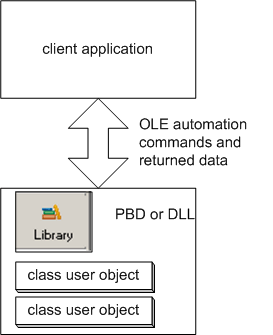
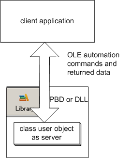
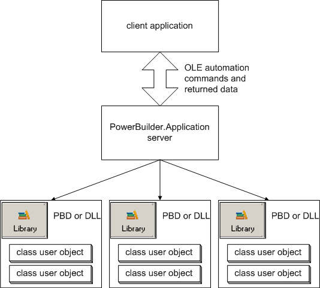

Use PowerBuilder COM servers This chapter focuses on the use of the PowerBuilder runtime
automation server. PowerBuilder COM/COM+ server
generation is the preferred technique for building COM-compliant
servers. The PowerBuilder automation server technology might be
discontinued in a future release.
Use PowerBuilder COM servers This chapter focuses on the use of the PowerBuilder runtime
automation server. PowerBuilder COM/COM+ server
generation is the preferred technique for building COM-compliant
servers. The PowerBuilder automation server technology might be
discontinued in a future release.
Chapter 19, "Using OLE in an Application ," explains how PowerBuilder provides containers for OLE objects and custom controls and how you can use automation to program those objects. The functionality for those objects is provided by server applications. The programming tells a server application how to manipulate its data.
The PowerBuilder automation server is an OLE server for programmable objects—rather than insertable, visible objects. It provides access to class user objects (nonvisual user objects) that you have defined in a PowerBuilder library. You can initiate a server session, create one or more objects, and send commands to those objects using automation syntax.
The class user object can create instances of other objects, and the server can pass references to these objects to the client.

Any client application that supports automation and programmable objects can access the PowerBuilder automation server. You can create your client application in any COM-compliant tool such as PowerBuilder, Visual C++, or Visual Basic.
Each time you connect to a server, you invoke an instance of the PowerBuilder runtime environment. However, this is not a huge penalty—each runtime shares the definition of the system classes in the client's runtime session.
User class definitions are not shared. Therefore, if you create the same large objects in each of several runtime sessions, memory usage for an object is multiplied by the number of sessions in which you create it. You could make your application more memory-efficient by reorganizing the application and creating the objects in a single session.
Any user object that encapsulates functionality and provides information can be a useful automation server. The information you want to access must be stored in public instance variables or available as return values or reference arguments of functions.
Examples of an automation server include:
There are three ways to access PowerBuilder user objects. You can access:
You can define a class user object and register it in the registry. When you use your client's functions for accessing an external object, you have access to the user object's properties and functions. (Automation accesses the object's instance variables as properties.)
The advantages of a registered user object as an automation server include:

For you to access an independent user object, it must be installed as an independent entity in the registry. You connect to it by means of an OLEObject variable and use automation to access it. The object invokes a PowerBuilder runtime session to support it.
When you access the object in your runtime session, you create a single instance of the object, and PowerBuilder invokes a runtime session to support it. For each registered object you create, you incur the overhead of additional runtime sessions.
The steps you take to register and use a user object are described in "Using a user object as an automation server ".
When you install PowerBuilder, an entry is added to the registry for PowerBuilder.Application, a general-purpose PowerBuilder automation server. You can create instances of any number of class user objects and access their properties and methods. (Automation accesses the object's instance variables as properties.)
The advantages of using PowerBuilder.Application include:
When you connect to PowerBuilder.Application, you specify the libraries that you will access. You can instantiate any number of user objects whose definitions reside in those libraries, as well as system classes.
Each object you create in the client exists as an independent OLEObject in the client, and you can address each one using automation. If the client passes a server object reference back to another server object in the same runtime session, PowerBuilder recognizes the PowerBuilder datatype of the object. This allows the two objects to interact in the server session, rather than being limited to automation commands from the client.

The steps you take to set up and use PowerBuilder.Application are described in "Using PowerBuilder as an automation server".
For business reasons, you might want to avoid references to PowerBuilder.Application, but still have access to the additional functionality it provides—for example, the efficiency of instantiating more than one object in a server session.
You can create an entry in the registry that serves as a second pointer to PowerBuilder.Application, allowing you to give the server a name appropriate for your business.
The steps involved in setting up a named server are described in "Creating and using a named server ".